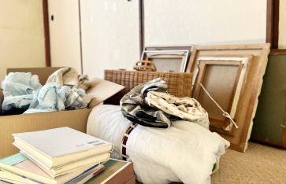
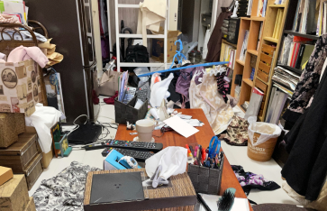

遺品整理・生前整理
故人様とご遺族様の想いに寄り添います。
これまでご遺族の方で行う事が一般的でしたが
現在は家電リサイクル法や細部に分けられた分別処理など
時間的にも人手の面でも一般の方がされるには、
かなりの時間と労力を要します。
そんな方の為に、思い出の詰まった大切なお品物を、
お客様のご要望に添って、真心を込めてお手伝いします。
ご相談・お見積り無料
土日祝日も対応可能
お問い合わせはお気軽に
受付時間 ; 10:00 ~ 19:00 定休日:
電話でのお問い合わせ
0495-71-7581
メールでのお問いあわせ

LINEからご相談
買取のご相談、お問い合わせはお気軽に
遺品整理が大変な3つの理由

1．思い出がよみがえってつらい
物を整理することが気持ちの整理につながることもありますが、
再び大きな悲しみにおそわれることもあります。
父の背広、母の着物、お気に入りの座布団……。
生前、故人が愛用していた物を見ると、思い出がよみがえり、
胸がいっぱいになってしまうことも。遺品は故人の“生きた証”。
純粋に物として見ることが時に難しいです。
2．どれを処分してよいかわからない
いざ処分しようと思っても「何が大切な
物かわからない」ということもよくあります。
捨てたあとで「あれは大切な物だった」と
わかって悔やむことも...。
とくに趣味の品や美術品はその価値がわからず
悩むことも多いようです。

3．遺品が大量すぎる
昨今では「なるべく物を持たない」という人も多いですが、
年配の方だと少し感覚が違うこともあります。家中の物を集めると、
トラック何台分にもなることも少なくありません。
余りに量が多すぎて片付けするのにも時間も両力もかかってしまいます。
リユースマーケットなら故人、ご家族の皆様のお気持ちに寄り添い、
整理するお手伝いをさせて頂きます。
店舗情報

- 〒367-0211
- 埼玉県本庄市児玉町吉田林392
- TEL:0495-71-7581
- 営業時間: 10:00~20:00
- 定休日: 毎週水曜日
- 中古品の販売買取ならリユースマーケットにおまかせ！